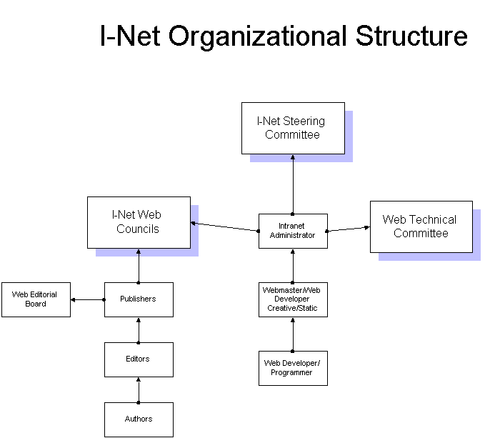

I-Net Strategy
This I-Net vison and strategy is at the core of what we do to help companies use computers in ways that help their business to prosper. This gives an overview of a concept for organizational structure to take advantage of I-net technologies within a company.
Executive Summary
The goal of an I-Net project is to incorporate Internet technologies into the corporate network infrastructure. These technologies enhance user productivity by providing more flexibility for publishing and sharing information among corporate communities. Additionally, they offer an advanced platform for the rapid development of business applications. Intranet technology is available to all network users and can be integrated as part of the standard desktop technology provided to employees.
Benefits of Intranet Electronic Publishing
Intranet electronic publishing significantly increases the speed and scope of information flow across geographic and organizational boundaries, surpassing what is possible with paper-based communication. The core Internet web technology within an Intranet makes electronic publishing easy, affordable, and accessible to the average employee. Although this technology improves access to information, its true value lies in enabling the rapid sharing and mixing of information that would otherwise remain separate. This dynamic interaction is what drives innovation and transformation within an organization.
Decentralization of Information Publication
One of the key features of Internet technologies is the decentralization of information publication. This allows business units to develop and distribute information more independently. As a result, they can publish content more quickly and cost-effectively. However, this decentralization is guided by overall publishing standards, procedures, and standardized tools. The Intranet Web Council, composed of representatives from all business units, manages the publishing process. The Intranet Web Administrator, who reports to the CIO, serves as the chairman of this committee. Additionally, the Intranet Web Technical Committee, also led by the Web Administrator, provides technical support and helps establish publishing standards and procedures.
The Key to a Great Intranet
A great Intranet is not defined by its sophisticated design or level of automation but by its ability to facilitate meaningful and effective communication. In fact, excessive automation and complexity may hinder communication by limiting participation to only a select few. When an Intranet reaches its full potential, success is not attributed to a single individual or department. Instead, it results from widespread conversations, collaboration, and shared responsibility across the organization. The ultimate goal is to enable as many employees as possible to actively participate in the communication process.
Next Steps
The remainder of this document outlines the organizational roles required to support an I-Net initiative.
I-Net
I-Net is a term used to describe how companies today are using Internet technology for the Internet (public access), Intranets (in-house web sites) and Extranets (combination of in-house and limited public access to in-house web sites)
Easy publication of information is one of the main selling points for companies to use I-net technologies today. Information, which had limited exposure to in-house and public audiences, can now be economically shared and maintained. The management and control of the information can now be more de-centralized with I-net technologies. The tools available make publication by every business unit a real possibility for companies today. The days of sending information to a printer, then making copies, then manually distributing it through inter-office or the postal system or over-night delivery are quickly coming to an end. We are faced with information being published to large audiences almost from the moment of conception. Documents will be saved to I-Net servers rather than traditional file servers. Once saved to the I-Net server, it is available to all the audiences, which have access to the server. The various audiences can receive notification of the information updates and easily retrieve the information through their web browsers.
The goal of an I-Net Project is to incorporate I-Net technologies into the in-house network infrastructure. These I-Net technologies help the company to enhance user communication by giving more flexibility for publishing and sharing information between corporate users. This Internet technology also provides an advanced platform for more rapid application development for company business applications. The Intranet technology is available to all network users and is a part of the standard desktop technology that is provided to all network users.
Intranet electronic publishing increases the speed and breadth of information flow across geographic and organization boundaries to a degree unobtainable with paper. The Internet web technology, at the core of an Intranet, makes electronic publishing easy, inexpensive and accessible to the average employee. It improves information access by the rapid sharing of information that previously would not have been available electronically and by the mixing of information that otherwise would not be likely to mix.
For a company to take advantage of the cost savings and to effectively utilize the new I-net technology will require a re-examination of most if not all the current publication methodologies in place in the company. Oversight of the new publication methods will be necessary to assure compliance with corporate standards and policies. This oversight is best accomplished with a steering committee which will provide guidance, direction and control over the emerging proliferation of new views of legacy information and new applications of information distribution and collection that were not previously possible. In fact several organizational units will need to be established to most effectively take advantage of the new technology.

I-Net
The people who carry out the I-Net roles require organizational entities to provide communication and coordination support as they do their work. The four basic organizational entities for the I-Net are:
I-Net Organizational Committees- The I-Net Steering Committee
- I-Net Web Councils
- I-Net Editorial Boards
- I-Net Technical Committee
The I-Net Steering Committee is composed of top level management within the organization. This committee is responsible for approving policies, procedures and standards submitted by the various I-Net Web Councils. The charter and responsibilities of the I-Net Web Councils are determined by the I-Net Steering Committee. The I-Net Steering committee will ultimately control and assure coordination for all the I-net publication activities.
Reporting directly to the In-Net Steering Committee is the I-Net Administrator. The I-Net Administrator is responsible for facilitating cooperative opportunities among the various I-Net Web Councils and business units. This is not a technical role although some understanding of the technology is required. The I-Net Administrator is primarily a manager and facilitator. The I-Net Administrator chairs each of the I-Net Web Councils.

Web Councils
-
The I-Net Web Councils consist of the Publishers for various business units in the enterprise.
-
The Publishers who comprise these Councils will represent various publication requirements presented to them by the various business units.
The I-Net Web Councils are responsible for setting policies, standards and high-level style guides. The I-Net Web Councils also are responsible for monitoring the I-Net for adherence to standards established and approved by the I-Net steering committee. The I-Net Web Councils communicate ideas and coordinate functions and the sharing of ideas, issues, applications and solutions. There may be several web councils established based on the size of the organization and the number of active publishers.
Editorial Boards
I-Net Editorial Boards are set up at the discretion of each Publisher, based on need. Each publisher will represent one or more departments, cost centers or applications. Some applications may require coordination of editors from various diverse business areas. Each publisher will determine how many editors are needed for each department and/or application. The Editorial Board, made up of editors from the various departments, is not focused on technology. They are focused on creating and managing the formal content to be both effective and to meet the enterprise and organizational standards. Editorial Board meetings focus on lower level, pressing and immediate issues. The Editorial Board is responsible for the I-Net enterprise map at their level and below. They are responsible for linking their I-Net Site Map to the content of the entire site. The Editorial Boards are involved in issues of creating and updating the logical presentation of the content.
Technical Committee
The I-Net Web Technical Committee is made up of the I-Net Administrator and other technical staff involved in the network infrastructure including graphical designers, I-net application developers and the Webmaster. The I-Net Administrator chairs this committee. The focus of this committee is on technical issues. The committee defines technical standards and helps to implement such standards. The I-Net Web Technical Committee provides an opportunity for the Webmaster to share information on innovative approaches and tools that make the Authors, Editors, and Publishers more effective at creating and maintaining their own information.
I-Net Organizational Roles
-
These roles, except for the Webmaster, are content and business needs focused and do not address the issues of supporting the underlying technical infrastructure.
-
The following I-Net roles will manage the formal content of the I-Net
Webmaster
The Webmaster is responsible for the application infrastructure and tactical operation of the I-Net.
Editor
An Editor is found in each business unit or department who has information to publish on the I-Net.
Publisher
Groups of cost centers and/or departments have a Publisher who determines what kind of formal information will be created and maintained.
Author
An Author creates the content of the publication. Note that programmers and engineers can also create content.
About the roles
The introduction of the I-Net is designed to reduce the current workload for the staff by developing applications that make it easier and more efficient to publish information and retrieve information. The current tasks of authoring, editing and publishing will be investigated with each I-net application. Only those applications where there is clearly a better method, using the I-Net technologies, will be considered for the I-Net. Therefore it is anticipated that the following roles for the I-Net will be handled by an existing head-count. It is not anticipated that any business unit will need to hire new employees to fulfill these roles. There will be training programs in place to upgrade current staff skills as required.